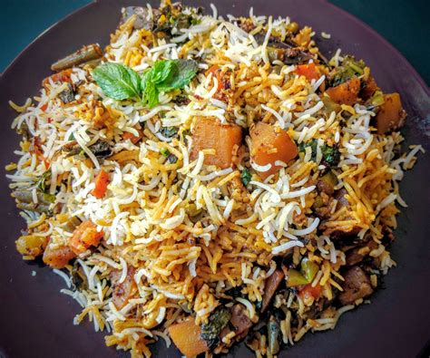

Chicken Biryani

Description
Biryani can be an elaborate, ambitious affair, packed with layer upon layer of spiced meat and vegetables all
steaming together with ghee.
Biryani Lover all the way!!!
Ingredients
- 1 lemon
- ½ tsp. sugar
- 1½ cups whole-milk yogurt, divided
- 3 tsp. kosher salt, divided
- 3 tsp. kosher salt, divided
- 1 red onion
- 1 4" piece fresh ginger, peeled, thinly sliced
- 2 garlic cloves, smashed, peeled
- ¾ tsp. ground cinnamon
- 1½ lb. skin-on, bone-in chicken thighs (4-6 thighs)
- 2 dried bay leaves
RICE AND ASSEMBLY
- ¾ cup kosher salt
- 2 cups aged basmati rice (such as Daawat)
- 1 red onion, thinly sliced
- ¾ cup melted ghee or neutral oil
- ½ cup mixed coarsely chopped nuts, such as almonds, pistachios, pine nuts, and/or walnuts
- 1 Tbsp. sugar
- ¾ cup mixed dried fruit, such as prunes, apricots, pineapple, and/or cranberries
Steps
- Finely grate 1 tsp. lemon zest into a small bowl. Squeeze in juice from one half of the lemon. Add sugar, 1
cup yogurt, 1 tsp. salt, and ¼ tsp. pepper. Finely chop one-quarter of the onion and stir into raita. Let
sit at room temperature at least 1 hour or chill up to overnight.
- Purée ginger, garlic, cinnamon, cardamom, juice of remaining lemon half, and remaining three-quarters of
onion, ½ cup yogurt, 2 tsp. salt, and ¾ tsp. pepper in a blender until smooth. Transfer to a medium bowl.
- Using your hands, pull skin off chicken thighs and discard. (Don't worry about any straggly bits of skin and
fat; they will render out during cooking.) Transfer to bowl with ginger mixture, add bay leaves, and toss to
combine. Cover with a plate and let marinate at room temperature at least 2 hours or preferably chill up to
overnight.
RICE AND ASSEMBLY
- Place a rack in lower third of oven; preheat to 350°. Bring salt and 3 qt. water to a rapid boil in a large
pot over high heat.
- Meanwhile, place rice in a medium bowl. Cover with cool tap water, use your hand to gently agitate the
grains, and drain. Repeat at least 2 more times until water runs clear enough to see your hand through it.
- Add drained rice all at once to boiling salted water. Initially the water will stop boiling and the rice
will sink to the bottom. Stir a few times with a wooden spoon to prevent sticking, then stop stirring. After
a couple of minutes, the water will return to a simmer and a few grains will begin appearing near the
surface. The rice is ready to drain when the grains have nearly doubled in size, the water returns to a
boil, and most of the rice rapidly bubbles to the surface. When you bite into a grain, you want to see a
hard white core; just like pasta cooked al dente, the grains should remain firm. Depending on the quality of
your rice, this can take anywhere from 3-7 minutes, so begin tasting the grains early. Drain rice and rinse
with water until cool. Set aside.
- Cook onion and ghee in a 4-6-qt. Dutch oven over medium-high heat, stirring constantly, until onions are
golden and crisp, 8-10 minutes. The sides and bottom of pot may brown and even develop some char. Don't
worry, this is a-okay! Color adds character! Using a slotted spoon, transfer onions to a plate.
- Reduce heat to medium-low and toast nuts in ghee in same pot, stirring occasionally, until fragrant and
darkened in color, 2-3 minutes. Using slotted spoon, transfer nuts to another plate; set aside for serving.
Transfer half of ghee in pot to a small bowl; set aside.
- Increase heat to medium-high and sprinkle sugar over remaining ghee in pot. Cook, stirring frequently, until
sugar forms deeply caramelized clumps, 3-5 minutes. Add chicken, scraping in marinade, and bring to a
simmer. Remove from heat and arrange chicken and marinade in an even layer. Sprinkle with dried fruit and
one-third of fried onions. Top with rice. Poke 5-7 holes into rice with the back of a wooden spoon until you
reach the chicken. Drizzle reserved ghee over and top with another third of fried onions. Cover with a
tight-fitting lid and return to medium heat. Cook until you can hear the chicken gurgling in the pot and
wisps of steam just begin to escape from lid, about 5 minutes. Do not open the lid at any point! If you
peek, you will risk losing too much steam, preventing the rice from properly cooking through. Transfer pot
to oven and bake, covered, 45 minutes. Let rest at least 15 minutes and up to 1 hour before uncovering.
- Using a large spoon or small plate, gently scoop rice off chicken and transfer to a platter. Carefully spoon
chicken thighs and any sauce over rice. Top with reserved fried nuts and remaining onions. Serve alongside
onion raita while ghee is still hot and rice is steamy.